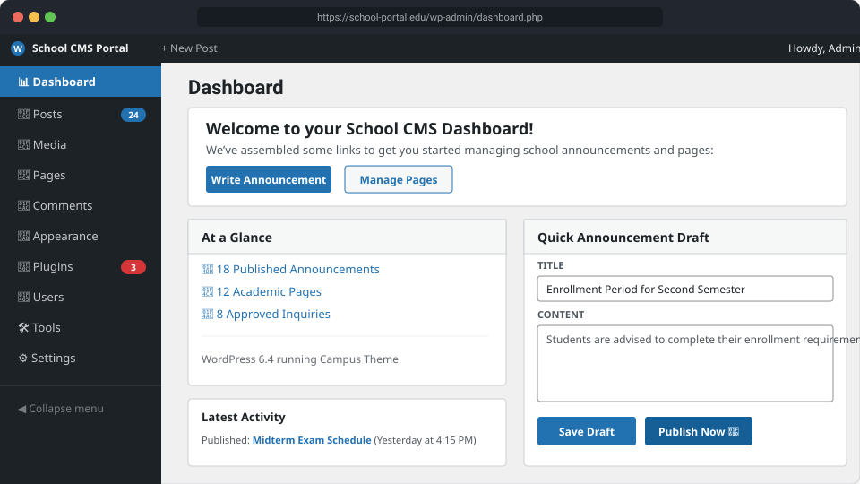
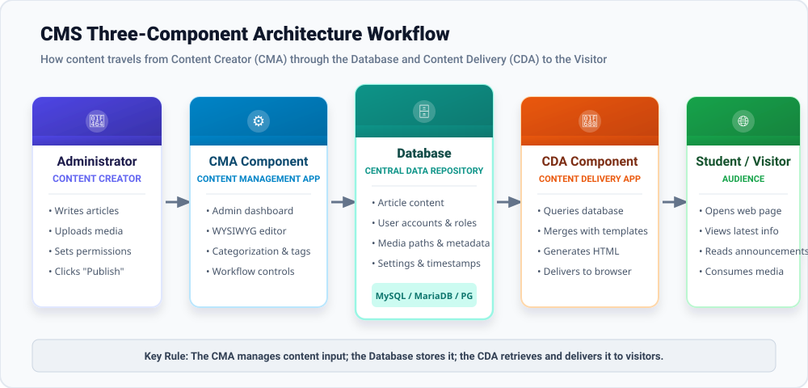
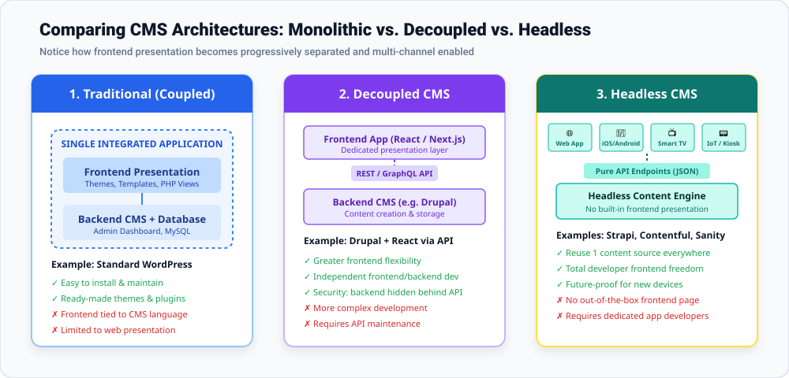
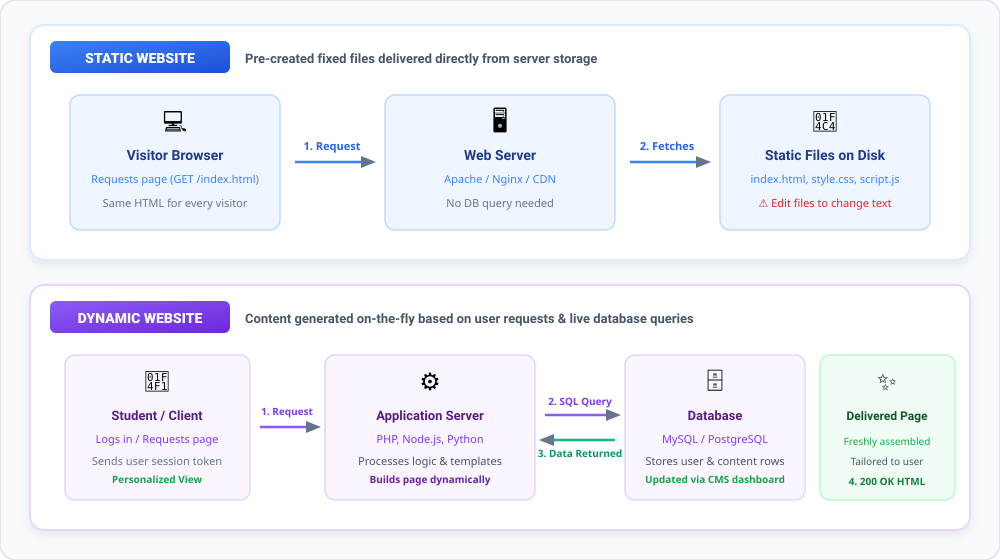
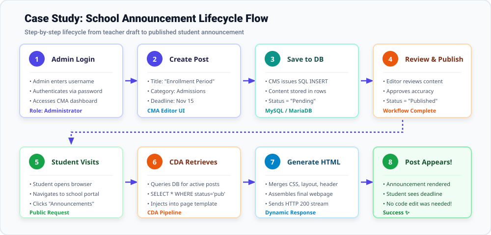

MODULE: INTRODUCTION TO WEB CONTENT MANAGEMENT SYSTEMS (CMS)
A comprehensive visual guide designed for projector lecture delivery. Discover how modern digital content is created, organized, stored in databases, and dynamically delivered to visitors worldwide.
Introduction to Content Management Systems
Understanding the transition from manual code updates to automated administrative platforms.
Core Definition
A Content Management System (CMS) is a software application or platform that allows users to create, edit, organize, manage, and publish website content without needing to manually write all the code.
Traditional Web Development
- Developers must manually write HTML, CSS, JavaScript, and backend code.
- Every announcement, typo fix, or news item requires modifying raw code files.
- Non-technical staff cannot update pages independently.
- High dependency on programmers for basic content edits.
With a CMS
- Users manage content through a graphical user interface (GUI) or dashboard.
- Non-technical administrators can publish articles in seconds.
- Content is stored neatly in databases and separated from design.
- Supports user permissions, templates, drafts, and scheduled posts.
Everyday Scenario: The School Website Announcement
Imagine you own a school website. Without a CMS, posting an upcoming enrollment notice requires opening code editors or waiting for a programmer. With a CMS, the administrator simply:
- Logs in to the administration dashboard.
- Opens the Posts or Pages section.
- Writes the announcement details.
- Adds images or media references.
- Clicks Publish — and the notice is live across the globe automatically!
Examples of Popular CMS Platforms
One of the most widely used CMS platforms on Earth, powering over 40% of all websites.
- Ideal for blogs, corporate portals, portfolios, and stores.
- Massive ecosystem of themes and plugins.
- Extensible with WooCommerce for e-commerce.
A powerful open-source CMS built with Model-View-Controller architecture.
- Advanced native content organization and taxonomy.
- Robust built-in user role management.
- Great for institutional and community websites.
A highly flexible, modular CMS designed for complex, high-traffic websites.
- Advanced granular user permissions and workflows.
- Widely chosen by universities, governments, and NGOs.
- Superb API and decoupled headless capabilities.
A leading e-commerce platform with integrated content management features.
- Manage products, checkout pages, inventory, and blog posts.
- Hosted cloud infrastructure with built-in payment gateways.
- Extensive template store and app ecosystem.
A drag-and-drop cloud website builder with integrated CMS functionality.
- Intuitive visual editing without touching any code.
- Hundreds of ready-made designer templates.
- Built-in dynamic content collections (Wix Studio).

Learning Objectives
Key competencies students are expected to master during this module.
CMS Architectures
Structure, internal communication, and deployment models of content management platforms.
CMS architecture refers to the structural organization of components that work synchronously to create, store, manage, and display website content. A typical system operates across three fundamental tiers:
A. CMA Component
The administrative frontend where creators, editors, and webmasters produce and format digital materials.
Key Functions:
- Create and edit pages & posts
- Upload images, video, and documents
- Assign categories, tags, and taxonomies
- Manage user roles & access permissions
- Schedule or immediately publish content
B. CDA Component
The delivery pipeline responsible for retrieving stored content and packaging it for website visitors.
Key Functions:
- Processes visitor HTTP requests
- Queries database for approved content
- Combines content data with presentation templates
- Generates valid HTML/CSS/JS dynamically
- Streams responses to visitor web browsers
C. Database
The relational or document data repository that securely preserves all dynamic information utilized by the CMS.
Stored Information:
- Articles, pages, and revision history
- User credentials and password hashes
- Media metadata and file storage paths
- Categories, tags, and site settings
- Publication timestamps and view statistics

Common Types of CMS Architecture

| Feature | Traditional / Coupled | Decoupled CMS | Headless CMS |
|---|---|---|---|
| Backend | Integrated with frontend | Separate CMS engine | Separate CMS engine |
| Frontend | Tightly coupled (built-in templates) | Separate dedicated frontend | Completely independent (Any device) |
| API Usage | Optional / Minimal | Common (REST / GraphQL) | Essential (Core requirement) |
| Flexibility | Moderate (Bound to theme engine) | High (Choose modern JS framework) | Maximum (Omnichannel delivery) |
| Complexity | Low (Quick setup) | Medium–High | Medium–High (Requires app devs) |
| Example Platforms | WordPress, Joomla | Drupal backend + Next.js frontend | Strapi, Contentful, Sanity |
Important Architectural Distinction
Decoupled and headless architectures are closely related cousins. A headless CMS is a pure form of decoupled architecture where the CMS provides zero default presentation layer — leaving the frontend entirely up to mobile apps, smart displays, websites, or IoT interfaces.
Static vs. Dynamic Websites
Understanding how web servers process files versus generating on-demand responses.

Static Websites
A static site delivers fixed, pre-created HTML, CSS, and media files directly from the web server disk. The server sends the exact same page to every visitor unless files are re-uploaded.
- Technologies: HTML, CSS, Client-side JS, Web server (Apache, Nginx, CDN).
- Advantages: Blazing-fast loading, simple low-cost hosting, minimal attack surface.
- Disadvantages: Manual updates required, difficult to scale large content, no built-in user personalization.
- Real-World Example: A developer's personal portfolio or a simple informational landing page.
Dynamic Websites
A dynamic site constructs web pages on-the-fly using backend scripting (PHP, Python, Node) and queries from a live database based on user requests, sessions, or conditions.
- Technologies: PHP, Python, Node.js + MySQL, PostgreSQL, MongoDB + React/Vue.
- Advantages: Personalized experiences, user accounts/authentication, instant dashboard updates.
- Disadvantages: Higher server overhead, database maintenance required, security hardening needed.
- Real-World Example: University student enrollment portal or e-commerce shop.
Direct Comparison Matrix
| Evaluation Factor | Static Website | Dynamic Website |
|---|---|---|
| Content Delivery | Pre-created files served as-is | Generated on-demand from data queries |
| Database Necessity | Not usually needed | Commonly used & required |
| How Updates Occur | Directly editing & re-uploading HTML/CSS files | Updated via CMS graphical dashboard |
| Personalization | None / very limited | Fully supported (different data per student) |
| User Accounts & Login | Not built-in | Supported (Sessions, JWT, Auth) |
| Development Complexity | Generally simpler | More complex architecture |
Critical Concept: Dynamic Does Not Always Mean Database-Driven
A website can use client-side JavaScript to modify content dynamically in the browser without any database. Conversely, a website can use a database during a build step to output pre-generated static pages (Static Site Generators like Hugo or Astro). The primary distinction is how content is generated and delivered, not merely whether a database exists.
Dynamic Content Management Principles
The nine foundational rules governing the lifecycle of digital information in modern web systems.
1. Content Creation
The structured process of authoring articles, announcements, products, or multimedia through rich WYSIWYG or Markdown editors.
2. Content Storage
Preserving content safely in normalized databases, cloud object storage, and file systems alongside metadata (author, timestamps, status).
3. Content Organization
Categorizing assets using taxonomies, hierarchical categories, tags, menus, and metadata so visitors and admins can easily locate items.
4. Content Editing & Updating
Empowering authorized staff to revise existing records instantly without rebuilding or redeploying the entire website.
5. Content Publishing
Controlling visibility through lifecycle stages: Draft ➔ Pending Review ➔ Scheduled ➔ Published ➔ Archived.
6. Content Delivery
The CDA retrieves data rows, populates layout templates, applies CSS themes, and transmits optimized responses to the end client.
7. User Roles & Permissions
Restricting privileges through Role-Based Access Control (RBAC) to protect sensitive data and prevent unauthorized changes.
8. Content Security & Backup
Protecting the CMS ecosystem with HTTPS, multi-factor authentication, software updates, automated daily DB backups, and role auditing.
9. Content Versioning & Workflow
Tracking historical revisions (audit trails) allowing staff to compare edits, see who changed what, and roll back if necessary.
Standard CMS Roles & Responsibilities
| Role | Access Level | Typical Responsibilities |
|---|---|---|
| Administrator | Full / Superuser | Manages site settings, plugins, themes, database updates, security, and all user accounts. |
| Editor | High | Reviews, approves, modifies, and publishes posts submitted by any user; organizes categories. |
| Author | Moderate | Writes, edits, and publishes their own posts, and uploads their own media files. |
| Contributor | Restricted | Drafts articles but cannot publish them directly; requires editor approval. |
| Subscriber | Read-only | Can log in to manage their personal profile and read password-protected student content. |
Case Study: School Announcement Management System
Observing the end-to-end operational flow from administrator creation to student delivery.

🧪 Interactive Projector Simulation: Publish an Announcement
Status: Ready for InputTeacher Demonstration: Type in an announcement, save it to the simulated database, publish it, and watch the Public Student Portal update on the right!
Enrollment Period for Second Semester
Students are advised to complete their enrollment requirements before the deadline.
Advantages and Limitations of CMS
Critical evaluation of benefits against technical constraints and security considerations.
✅ Key Advantages
- Easy Content Management: Non-technical users can author and publish with graphical interfaces.
- Reduced Coding Requirements: Everyday web upkeep no longer relies on software engineers.
- Collaborative Workflows: Multi-user teams with designated permissions streamline governance.
- Rapid Site Updates: Urgent announcements propagate in seconds across the entire site.
- Consistent Reusable Design: Themes guarantee visual uniformity across thousands of pages.
- High Scalability: Modern CMS platforms comfortably handle growth from hundreds to millions of records.
- Modular Extensions: Thousands of plugins expand functionality (SEO, analytics, forms, ecommerce).
⚠️ Recognized Limitations
- Security Vulnerabilities: Outdated plugins, unpatched core software, or weak passwords invite exploits.
- Performance Overhead: Excessive plugins, unoptimized databases, and heavy scripts can degrade page speed.
- Ongoing Maintenance: Requires routine updates for core engines, themes, database tables, and security certificates.
- Customization Limits: Deep architectural changes or bespoke logic may require advanced PHP/JS programming.
- Third-Party Dependencies: Reliance on external plugin developers risks abandoned software or broken updates.
- Administrative Learning Curve: Editors and department heads must be trained on workflows and taxonomies.
Practical Application & Classroom Exercise
Real-world analysis scenario and hands-on laboratory exercise.
Scenario: College Campus Web Overhaul
A regional college wants to launch a modern portal where students view academic schedules, announcements, sports events, and admission requirements. Faculty members need to update syllabi without contacting IT.
Class Discussion Questions
- Why should the college transition away from a static HTML site to a modern CMS?
- What CMS architecture (Traditional, Decoupled, or Headless) would suit a standard college budget and maintenance team?
- What role does the relational database play when 5,000 students query the same announcement at 9:30 AM?
- Who on campus should hold "Administrator" privileges versus "Author" or "Contributor" status?
- What is the fundamental difference in how student grades are displayed on a static site versus a dynamic portal?
- How does content versioning prevent accidental erasure of school regulations?
Lab Exercise: Creating a CMS Website Concept
Students will conceptualize or configure a five-page school website containing: Home Page, About Us, Announcements, Events, and Contact Us.
Generalization & Key Takeaways
Core principles to retain for professional web engineering.
CMA + CDA + Database
The CMA enables intuitive authoring, the Database provides persistent relational storage, and the CDA delivers assembled content to visitors.
Content & Presentation Separation
By divorcing article text from HTML templates, updates can happen continuously without touching system code or causing layout breaks.
Information Over Appearance
A modern website is not merely what visitors see. It is how information is authored, verified, organized, secured, and delivered to the people who depend on it.